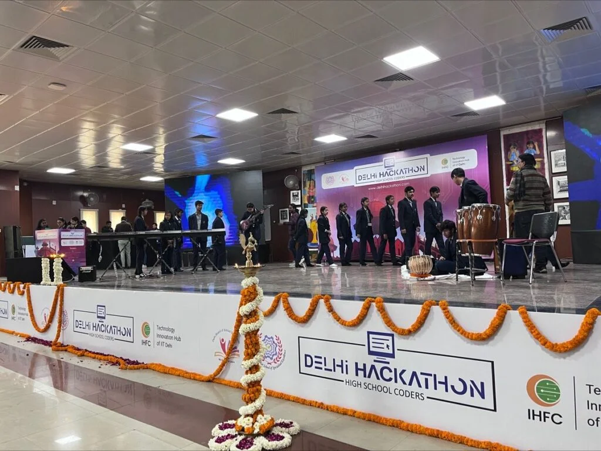

My First Hackathon — Where Ideas Turned Into Reality
Before the Hackathon
I began exploring engineering projects and academic work around late 8th grade. By 9th grade, I had developed an interest in programming and computer science, but I was still very new to it. I knew some basic C++ and working with Arduino, but I hadn’t yet reached the stage where coding felt natural or intuitive.
Around that time, I was unexpectedly selected as the team leader for my school’s junior team at a high-school hackathon organized by the Indian Institute of Technology Delhi.
I did not feel particularly ready.
But one of my mentors believed I could do it, and that confidence mattered. In the week leading up to the event, I pushed myself to learn as much as possible — basic Python, some ideas of backend/frontend development, and how databases might fit into a project. It wasn’t mastery, but it was momentum.
The First Round
The initial round was a programming and logic test held locally. Walking there felt strangely significant — it was the first time I felt I was representing something larger than myself.
When we qualified for the final round, it was genuinely exciting. It was my first hackathon, and the fact that our small team had made it forward made it feel real.
The Day of the Hackathon
We reached the venue early, and the atmosphere immediately felt different from anything I had experienced before. There was a sense of urgency and excitement — people discussing ideas, sketching architectures, planning solutions even before the event formally began.
After registration and the inauguration, we received our problem statement selected randomly. Then the clock started.
For the next several hours, everything narrowed to one focus: build something that works.
Our team built an educational platform with multiple features and named it Educat. Since I was the only one with programming experience, most of the implementation responsibility fell on me. It was intense, but also strangely enjoyable.
Time moved quickly — debugging issues, experimenting with features, learning things on the fly. Energy drinks disappeared faster than features were completed, and the room was filled with the rhythm of keyboards, discussions, and occasional frustration.
What struck me most was how differently teams responded to pressure. Some kept iterating calmly, others lost clarity. Only later, through my work in quantitative research, did I realize I had witnessed a micro-version of market behavior itself — success under uncertainty is less about brilliance and more about structured decision-making in motion.
Submission and Aftermath

When it was time to submit, I felt a mixture of relief, stress, and curiosity. The project wasn’t perfect — which is true for most hackathon builds — but it existed, and we had made it from idea to working prototype in a few hours.
After submission, we finally had time to interact with other participants. Those conversations were unexpectedly valuable. I discovered tools, technologies, and ideas I hadn’t even known existed. It made the technical world feel much larger than I had previously imagined.
What Made It Different
I had attended academic conferences before, but this felt completely different.
In research spaces, people discuss ideas, models, and theories.
At the hackathon, the focus was execution.
Here, the question was not “Is this idea interesting?” — as in theoretical physics, where we test whether the mathematics holds, what conclusions it yields, and whether the direction is worth pursuing — but instead “Can this be turned into something functional within the next few hours?”
That distinction changed how I thought about technology. It showed me that understanding concepts is only one part of the process — the real challenge is turning them into working systems under constraints.
What Stayed With Me
Looking back, that hackathon was less about the project itself and more about what it revealed:
- how much can be learned in a short, intense period
- how responsibility accelerates growth
- and how different building something feels compared to only discussing it
It was the first time I truly experienced the transition from thinking about ideas to creating them.
Since then, hackathons have remained one of my favorite forms of extracurricular learning. Even though I haven’t been able to attend many due to other commitments, that first experience shaped how I approach building, experimenting, and learning new technologies.
And in many ways, it was the moment I realized that ideas only become meaningful when they are tested in reality. Which since then has been a major principle guiding my work and life in general.